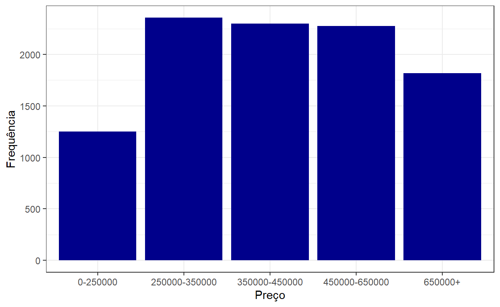
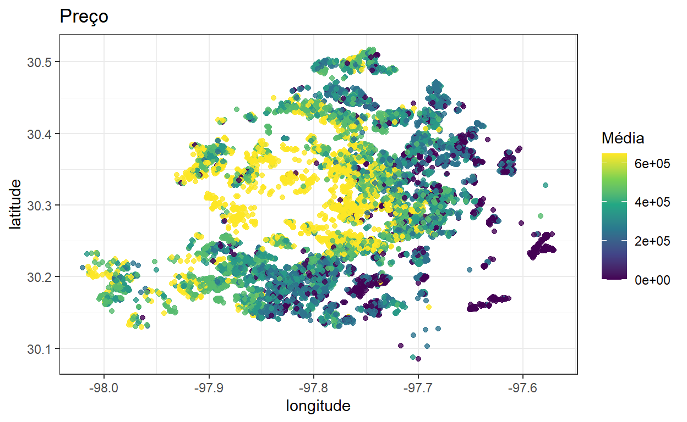
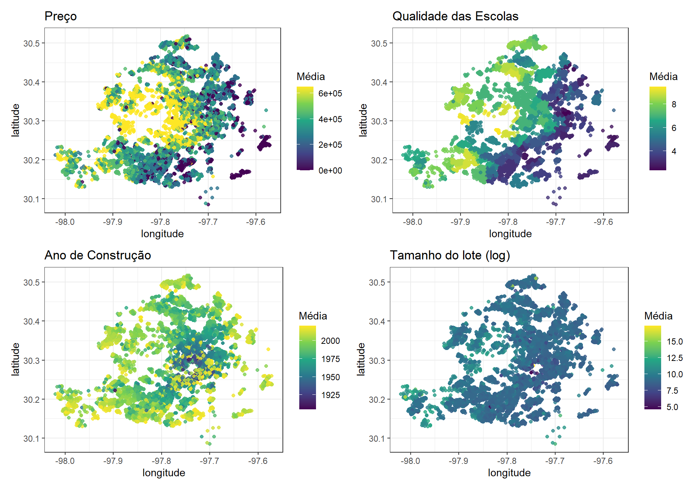
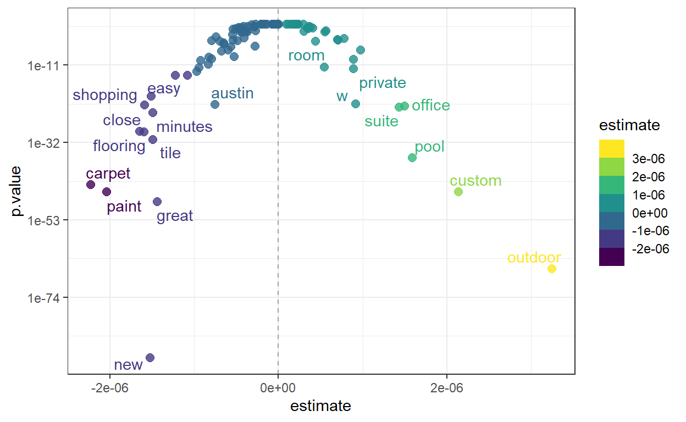
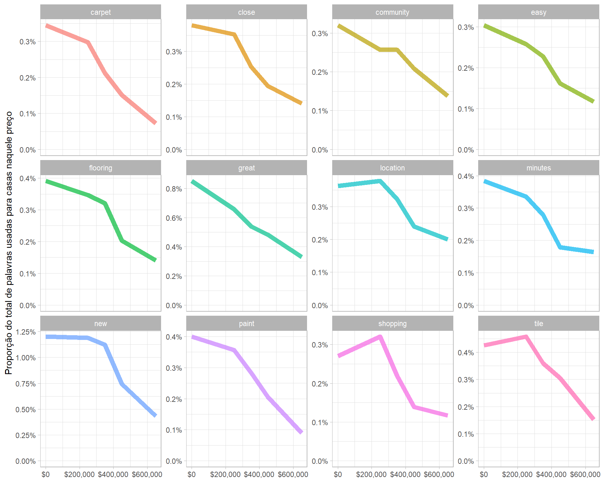
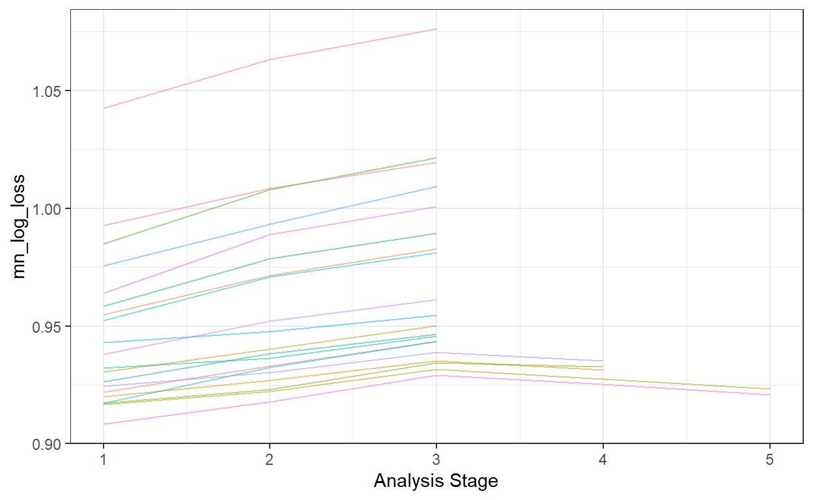
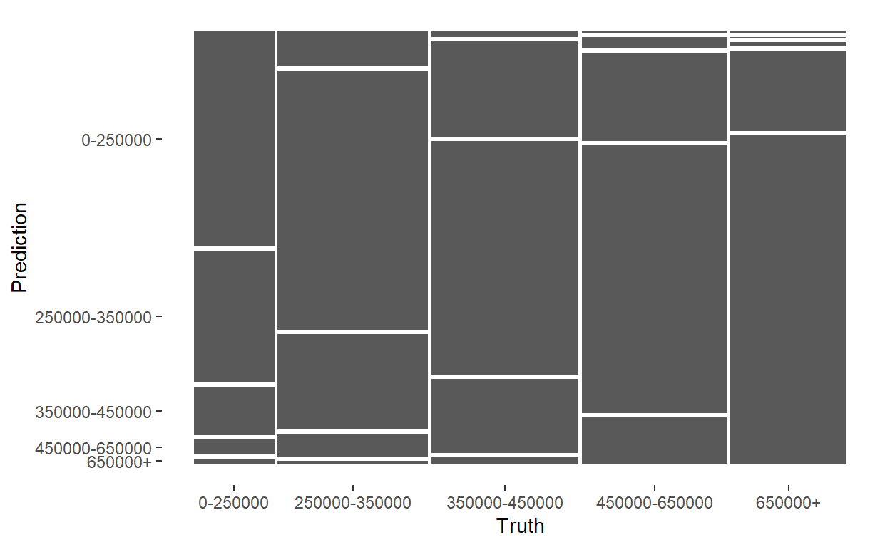
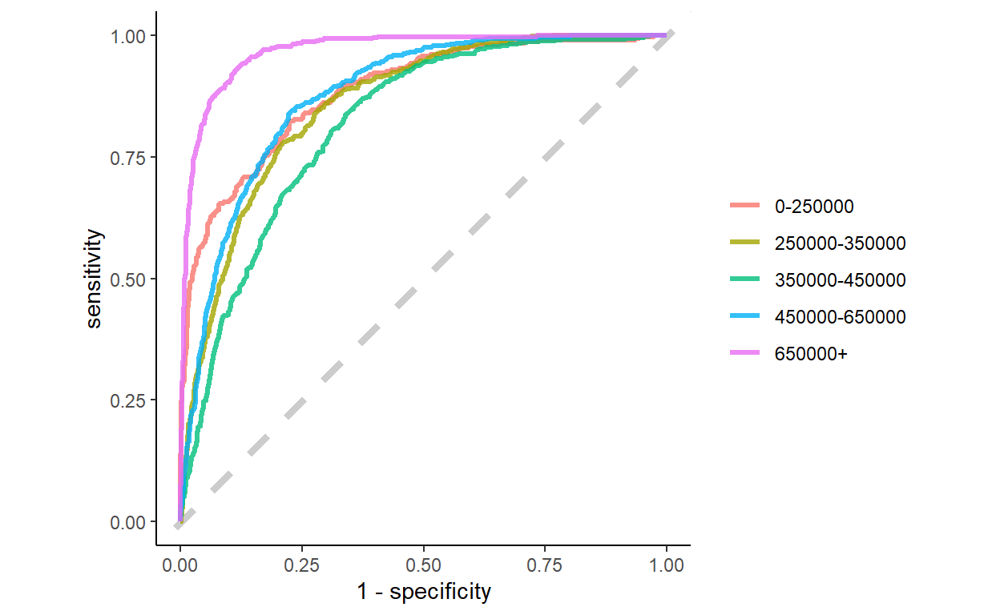
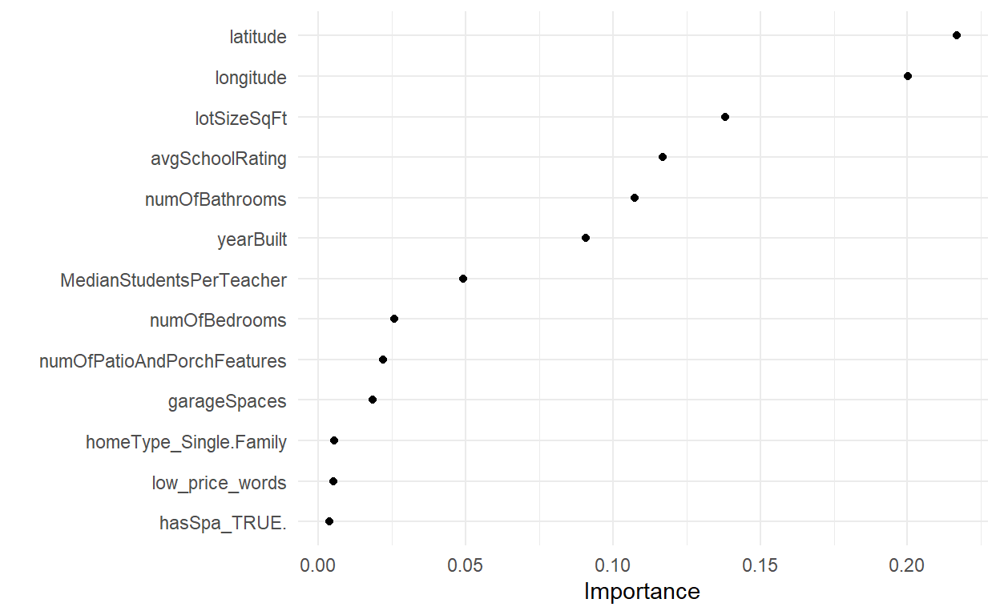

Avaliando o algoritmo XGBoost para prever preços de casas em Austin, Texas.
Neste post vou usar os pacotes do tidymodels para modelar preços de casas. Os dados são de uma competição do Kaggle chamada SLICED. Vou comparar 3 modelos e escolher e aprimorar o que se sair melhor.
Nosso objetivo de modelagem é prever o preço (em faixas) das casas em Austin, TX, com base nas características dos anúncios imobiliários. Este é um problema de classificação multiclasse, onde precisamos calcular uma probabilidade para cada casa estar em cada faixa de preço. O principal conjunto de dados fornecido está em um arquivo CSV chamado training.csv.
library(tidyverse)
train_0 <- read_csv("train.csv")
train_0 %>%
ggplot(aes(x = priceRange)) +
geom_bar(fill = 'darkblue') +
labs(x = "Preço", y = "Frequência") +
theme_bw()
Podemos ver que as faixas de preço estão equilibradas, exceto pela faixa de menor valor.
price_plot <- train_0 %>%
mutate(priceRange = parse_number(priceRange)) %>%
ggplot(aes(longitude, latitude, col = priceRange)) +
geom_point(alpha = 0.8) +
labs(title = "Preço", col = "Média") +
scale_color_viridis_c() +
theme_bw()
price_plot
Como era de se esperar, as casas mais caras estão localizadas no centro da cidade. Ao passo que nos afastamos, o preço tende a diminuir.
Vamos examinar essa distribuição e compará-la com outras variáveis disponíveis no conjunto de dados. Podemos criar uma pequena função de plotagem usando {{}} para iterar rapidamente e combiná-las com o patchwork
library(patchwork)
plot_austin <- function(var, title) {
train_0 %>%
ggplot(aes(longitude, latitude, col = {{ var }})) +
geom_point(alpha = 0.8) +
scale_color_viridis_c() +
labs(
title = title,
col = "Média"
) +
theme_bw()
}
(price_plot + plot_austin(avgSchoolRating, "Qualidade das Escolas")) /
(plot_austin(yearBuilt, "Ano de Construção") + plot_austin(log(lotSizeSqFt), "Tamanho do lote (log)"))
Observe as relações entre o preço e as outras variáveis. São essas relações que buscamos ao construir os modelos.
A variável description contém o texto de cada anúncio imobiliário. Podemos tentar usar as características do texto diretamente na modelagem, mas isso muitas vezes não funciona tão bem para modelos de boosted trees. Vamos explorar outra opção que pode funcionar melhor em algumas situações: usar uma análise separada para identificar palavras importantes e depois criar variáveis dummy que indiquem se determinado anúncio contém essas palavras.
Vamos começar organizando o texto da variável description.
library(tidytext)
austin_tidy <-
train_0 %>%
mutate(priceRange = parse_number(priceRange)) %>%
unnest_tokens(word, description) %>% # Tokenizar o variavel description
anti_join(get_stopwords()) # Tirar as 'stop words' que nao tem significado
austin_tidy %>%
count(word, sort = TRUE)# A tibble: 17,922 × 2
word n
<chr> <int>
1 home 11622
2 kitchen 5721
3 room 5494
4 austin 4918
5 new 4774
6 large 4771
7 2 4585
8 bedrooms 4571
9 contains 4413
10 3 4386
# ℹ 17,912 more rowsEm seguida, vamos calcular as frequências das palavras por faixa de preço para as 100 palavras mais frequentes.
top_words <-
austin_tidy %>%
count(word, sort = TRUE) %>%
filter(!word %in% as.character(1:5)) %>% # Tirar alguns numeros
slice_max(n, n = 100) %>%
pull(word)
word_freqs <-
austin_tidy %>%
count(word, priceRange) %>%
complete(word, priceRange, fill = list(n = 0)) %>% # completar se houver valores ausentes
group_by(priceRange) %>%
mutate(
price_total = sum(n),
proportion = n / price_total
) %>%
ungroup() %>%
filter(word %in% top_words)
word_freqs# A tibble: 500 × 5
word priceRange n price_total proportion
<chr> <dbl> <int> <int> <dbl>
1 access 0 180 56294 0.00320
2 access 250000 365 114865 0.00318
3 access 350000 322 116710 0.00276
4 access 450000 294 125635 0.00234
5 access 650000 248 112114 0.00221
6 appliances 0 209 56294 0.00371
7 appliances 250000 583 114865 0.00508
8 appliances 350000 576 116710 0.00494
9 appliances 450000 567 125635 0.00451
10 appliances 650000 391 112114 0.00349
# ℹ 490 more rowsAgora, vamos usar a modelagem para identificar as palavras que estão aumentando com o preço e aquelas que estão diminuindo com o preço.
library(tidymodels)
word_mods <-
word_freqs %>%
nest(data = - word) %>%
mutate(
model = map(data, ~ glm(cbind(n, price_total) ~ priceRange, data = ., family = "binomial")),
model = map(model, tidy)
) %>%
unnest(model) %>%
filter(term == "priceRange") %>%
mutate(p.value = p.adjust(p.value)) %>%
arrange(-estimate)
word_mods# A tibble: 100 × 7
word data term estimate std.error statistic p.value
<chr> <list> <chr> <dbl> <dbl> <dbl> <dbl>
1 outdoor <tibble> priceRange 3.25e-6 1.85e-7 17.6 4.59e-67
2 custom <tibble> priceRange 2.14e-6 1.47e-7 14.6 4.20e-46
3 pool <tibble> priceRange 1.59e-6 1.22e-7 13.0 6.08e-37
4 office <tibble> priceRange 1.50e-6 1.46e-7 10.3 6.27e-23
5 suite <tibble> priceRange 1.43e-6 1.39e-7 10.3 4.20e-23
6 gorgeous <tibble> priceRange 9.74e-7 1.62e-7 6.02 1.22e- 7
7 w <tibble> priceRange 9.19e-7 9.05e-8 10.2 2.48e-22
8 windows <tibble> priceRange 8.89e-7 1.28e-7 6.94 2.90e-10
9 private <tibble> priceRange 8.89e-7 1.15e-7 7.70 1.06e-12
10 car <tibble> priceRange 7.78e-7 1.66e-7 4.69 1.55e- 4
# ℹ 90 more rowsEssas são as palavras associadas com preços mais altos.
# A tibble: 100 × 7
word data term estimate std.error statistic p.value
<chr> <list> <chr> <dbl> <dbl> <dbl> <dbl>
1 carpet <tibble> priceRange -2.23e-6 1.57e-7 -14.3 3.06e-44
2 paint <tibble> priceRange -2.04e-6 1.40e-7 -14.6 3.33e-46
3 close <tibble> priceRange -1.65e-6 1.41e-7 -11.7 1.01e-29
4 flooring <tibble> priceRange -1.60e-6 1.36e-7 -11.7 7.75e-30
5 shopping <tibble> priceRange -1.59e-6 1.55e-7 -10.2 1.38e-22
6 new <tibble> priceRange -1.52e-6 7.44e-8 -20.5 3.58e-91
7 easy <tibble> priceRange -1.51e-6 1.57e-7 -9.67 3.24e-20
8 minutes <tibble> priceRange -1.50e-6 1.40e-7 -10.7 1.09e-24
9 tile <tibble> priceRange -1.49e-6 1.23e-7 -12.1 6.05e-32
10 great <tibble> priceRange -1.44e-6 9.63e-8 -15.0 9.25e-49
# ℹ 90 more rowsJá essas, são palavras associadas com preços mais baixos
Vamos fazer algo semelhante a um gráfico de vulcão para ver a relação entre o valor-p e o tamanho do efeito dessas palavras.
library(ggrepel)
word_mods %>%
ggplot(aes(estimate, p.value, color=estimate)) +
geom_vline(xintercept = 0, lty = 2, alpha = 0.7, color = "gray50") +
geom_point(alpha = 0.8, size = 2.5) +
scale_y_log10() +
geom_text_repel(aes(label = word), family = "IBMPlexSans") +
scale_color_viridis_b() +
theme_bw()
Essas são as palavras que gostaríamos de tentar detectar e usar nos nossos modelos, em vez de usar todos os tokens de texto como características individualmente.
Podemos observar essas variações diretamente em relação ao preço. Por exemplo, estas são as palavras mais associadas à diminuição do preço.
word_freqs %>%
filter(word %in% lower_words) %>%
ggplot(aes(priceRange, proportion, color = word)) +
geom_line(size = 2.5, alpha = 0.7, show.legend = FALSE) +
facet_wrap(vars(word), scales = "free_y") +
scale_x_continuous(labels = scales::dollar) +
scale_y_continuous(labels = scales::percent, limits = c(0, NA)) +
labs(x = NULL, y = "Proporção do total de palavras usadas para casas naquele preço") +
theme_light(base_family = "IBMPlexSans")
Casas mais baratas são descritas como “great” (ótimas), mas as casas caras não. E, aparentemente, não há necessidade de mencionar a localização (“close”, “minutes”, “location”) em casas mais caras.
Vamos começar nossa modelagem definindo nosso “orçamento de dados”, assim como as métricas (este desafio foi avaliado usando a métrica de log loss para classificação multiclasse).
set.seed(123)
train_0$hasSpa <- factor(train_0$hasSpa)
austin_split <- train_0 %>%
select(-city) %>%
mutate(description = str_to_lower(description)) %>%
initial_split(strata = priceRange)
austin_train <- training(austin_split)
austin_test <- testing(austin_split)
austin_metrics <- metric_set(accuracy, roc_auc, mn_log_loss)
set.seed(234)
austin_folds <- vfold_cv(austin_train, v = 5, strata = priceRange)
austin_folds# 5-fold cross-validation using stratification
# A tibble: 5 × 2
splits id
<list> <chr>
1 <split [5996/1502]> Fold1
2 <split [5998/1500]> Fold2
3 <split [5999/1499]> Fold3
4 <split [5999/1499]> Fold4
5 <split [6000/1498]> Fold5Para a feature engineering, vamos usar basicamente tudo no conjunto de dados (exceto a variável “city”, que não foi muito útil) e criar variáveis dummy ou indicadoras usando step_regex(). A ideia aqui é detectar se essas palavras associadas a preços baixos/altos estão presentes e criar uma variável sim/não indicando sua presença ou ausência.
higher_pat <- glue::glue_collapse(higher_words, sep = "|")
lower_pat <- glue::glue_collapse(lower_words, sep = "|")
austin_rec <-
recipe(priceRange ~ ., data = austin_train) %>%
update_role(uid, new_role = "uid") %>%
step_regex(description, pattern = higher_pat, result = "high_price_words") %>%
step_regex(description, pattern = lower_pat, result = "low_price_words") %>%
step_rm(description) %>%
step_novel(homeType) %>%
step_unknown(homeType) %>%
step_other(homeType, threshold = 0.02) %>%
step_dummy(all_nominal_predictors()) %>%
step_nzv(all_predictors())
austin_recAgora, vamos criar uma especificação de modelo xgboost ajustável, ajustando muitos dos hiperparâmetros importantes do modelo, e combiná-la com nossa receita em um workflow(). Também podemos criar uma grade personalizada, xgb_grid, para especificar quais parâmetros queremos testar.
xgb_spec <-
boost_tree(
trees = 1000,
tree_depth = tune(),
min_n = tune(),
mtry = tune(),
sample_size = tune(),
learn_rate = tune()
) %>%
set_engine("xgboost") %>%
set_mode("classification")
xgb_word_wf <- workflow(austin_rec, xgb_spec)
set.seed(123)
xgb_grid <-
grid_max_entropy(
tree_depth(c(5L, 10L)),
min_n(c(10L, 40L)),
mtry(c(5L, 10L)),
sample_prop(c(0.5, 1.0)),
learn_rate(c(-2, -1)),
size = 40
)
xgb_grid# A tibble: 40 × 5
tree_depth min_n mtry sample_size learn_rate
<int> <int> <int> <dbl> <dbl>
1 6 39 9 0.864 0.0101
2 8 23 5 0.987 0.0433
3 10 28 6 0.935 0.0104
4 7 21 7 0.522 0.0111
5 5 15 10 0.738 0.0125
6 6 17 10 0.538 0.0169
7 5 38 6 0.750 0.0280
8 6 34 8 0.912 0.0715
9 8 21 9 0.960 0.0613
10 10 19 8 0.620 0.0170
# ℹ 30 more rowsAgora podemos ajustar o modelo através da grade de parâmetros e nossas amostras reamostradas. Como estamos testando muitas combinações de hiperparâmetros, vamos usar o método de racing para interromper cedo as combinações de hiperparâmetros que claramente apresentam desempenho ruim.
library(doParallel)
cores <- parallel::detectCores()
cl <- makePSOCKcluster(cores)
registerDoParallel(cl)
set.seed(234)
xgb_word_rs <-
tune_race_anova(
xgb_word_wf,
austin_folds,
grid = xgb_grid,
metrics = metric_set(mn_log_loss),
control = control_race(verbose_elim = TRUE)
)
xgb_word_rs
show_best(xgb_word_rs)# A tibble: 2 × 11
mtry min_n tree_depth learn_rate sample_size .metric .estimator
<int> <int> <int> <dbl> <dbl> <chr> <chr>
1 6 21 7 0.0219 0.882 mn_log_loss multiclass
2 8 27 8 0.0149 0.762 mn_log_loss multiclass
# ℹ 4 more variables: mean <dbl>, n <int>, std_err <dbl>,
# .config <chr>Vamos usar o last_fit() para ajustar uma última vez aos dados de treinamento e avaliar uma última vez nos dados de teste, utilizando o resultado numericamente otimizado do xgb_word_rs.
xgb_last <-
xgb_word_wf %>%
finalize_workflow(select_best(xgb_word_rs)) %>%
last_fit(austin_split)
xgb_last# Resampling results
# Manual resampling
# A tibble: 1 × 6
splits id .metrics .notes .predictions .workflow
<list> <chr> <list> <list> <list> <list>
1 <split [7498/2502]> train… <tibble> <tibble> <tibble> <workflow>Como esse modelo se saiu nos dados de teste, que não foram utilizados no ajuste ou treinamento?
collect_predictions(xgb_last) %>%
mn_log_loss(priceRange, `.pred_0-250000`:`.pred_650000+`)# A tibble: 1 × 3
.metric .estimator .estimate
<chr> <chr> <dbl>
1 mn_log_loss multiclass 0.911Esse resultado é bastante bom para um único modelo (não combinado).
Como esse modelo se comporta entre as diferentes classes?
collect_predictions(xgb_last) %>%
conf_mat(priceRange, .pred_class) %>%
autoplot()
Podemos também visualizar isso com uma curva ROC
collect_predictions(xgb_last) %>%
roc_curve(priceRange, `.pred_0-250000`:`.pred_650000+`) %>%
ggplot(aes(1 - specificity, sensitivity, color = .level)) +
geom_abline(lty = 2, color = "gray80", size = 1.5) +
geom_path(alpha = 0.8, size = 1.2) +
coord_equal() +
labs(color = NULL) +
theme_classic()
Note que é mais fácil identificar as casas mais caras, mas mais difícil classificar corretamente as casas menos caras.
Quais características são mais importantes para este modelo xgboost?
library(vip)
extract_workflow(xgb_last) %>%
extract_fit_parsnip() %>%
vip(geom = "point", num_features = 15) +
theme_minimal()
As informações espaciais de latitude/longitude são de longe as mais importantes. Note que o modelo usa as palavras de preço baixo com mais frequência do que usa, por exemplo, se há um spa ou se é uma casa unifamiliar (em oposição a um sobrado ou condomínio). Parece que o modelo está tentando distinguir algumas dessas categorias de preço mais baixo. O modelo realmente não usa a variável de palavras de preço alto, talvez porque já seja fácil identificar as casas caras.